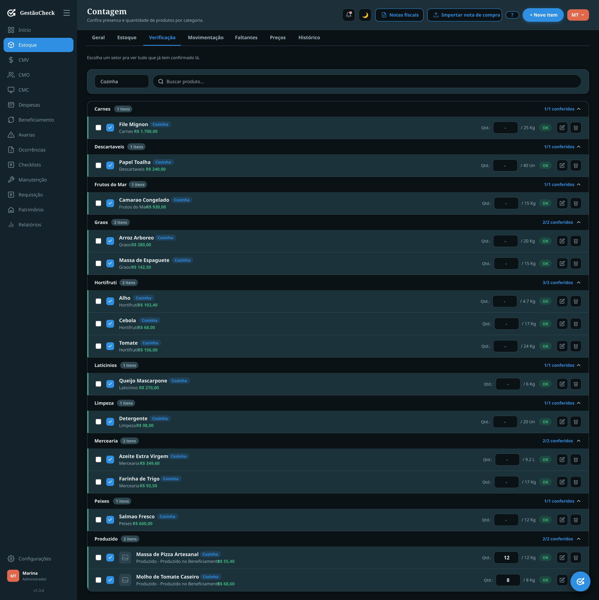
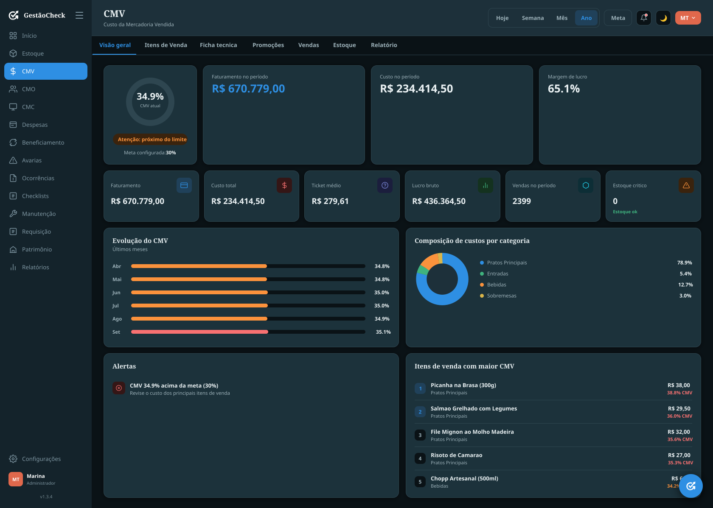
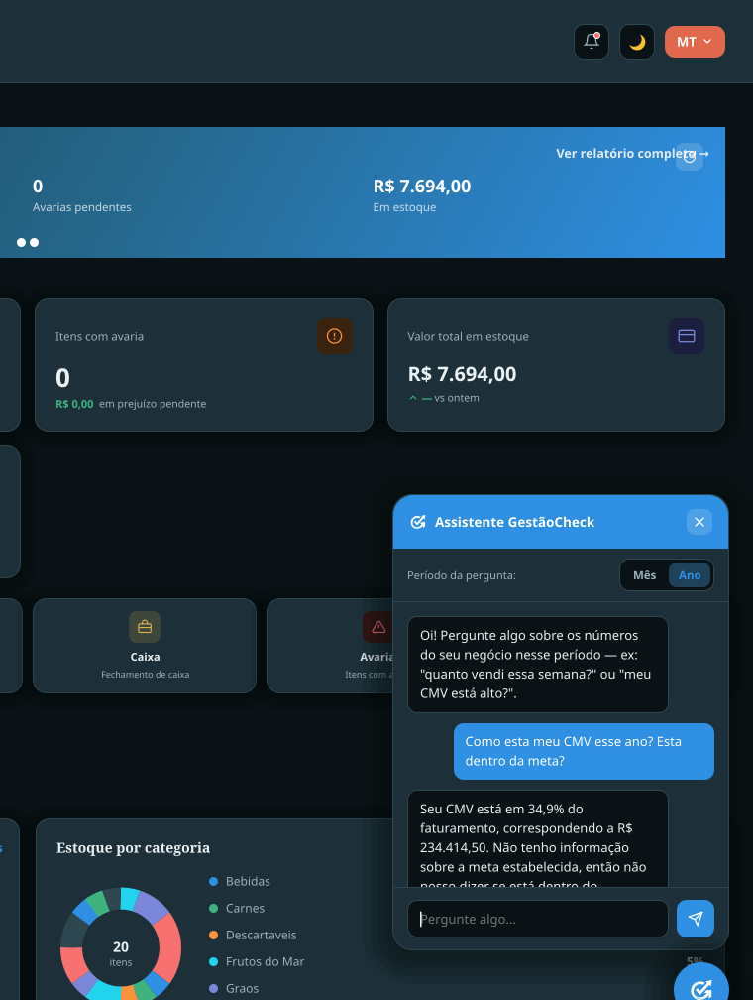
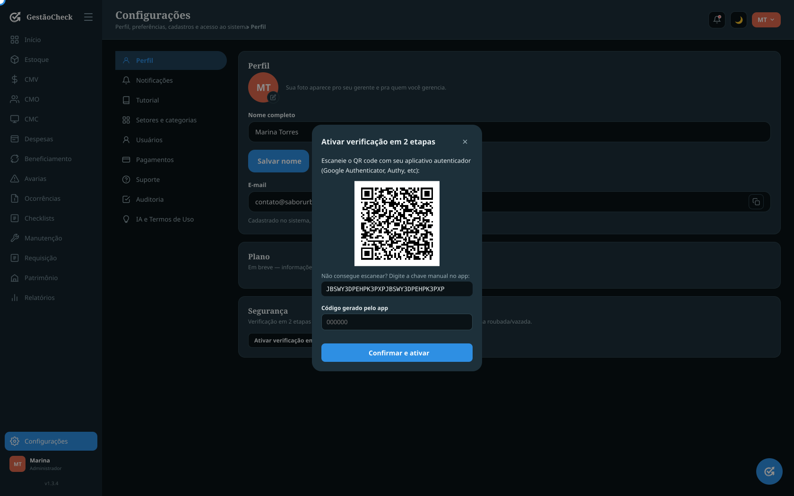

O GestãoCheck conecta estoque, produção, compras, custos e operação para você entender exatamente o que está acontecendo na sua empresa.
Interface ilustrativa do sistema, dados demonstrativos
Acompanhar o dia a dia da operação sem ferramentas inteligentes gera prejuízos silenciosos.
Setores, produtos, categorias, funcionários e permissões.
Entradas, saídas, transferências, notas fiscais, contagens e movimentações.
CMV, CMO, CMC, produção e perdas.
Dashboards, alertas e relatórios ajudam a identificar problemas e oportunidades.
Clique em qualquer card para ver a tela real por dentro.
Custo da mercadoria vendida.
Custo da mão de obra.
Custo médio de compra.
Chega de digitar notas manualmente. Fotografe ou envie sua nota fiscal e o GestãoCheck identifica os produtos automaticamente usando OCR, convertendo as unidades sozinho.

Sistema real, dados fictícios

Sistema real, dados fictícios
Entenda o custo real dos produtos vendidos e descubra onde sua margem está sendo perdida, com a ficha técnica ligada aos itens reais do seu estoque.
Um assistente que entende os números da sua operação de verdade. Sem precisar abrir relatório nenhum, é só perguntar.

Sistema real, dados fictícios
Infraestrutura pensada para manter os dados da sua empresa protegidos e disponíveis.
Arraste a chave até o cadeado (ou toque nela)

Sistema real, dados fictícios
Clique na imagem para trancar de novo e ver os recursos
O primeiro caso de uso surgiu em uma pizzaria, mas o GestãoCheck não é exclusivo para restaurantes.
Conheça o GestãoCheck e descubra como transformar dados da sua empresa em decisões melhores.